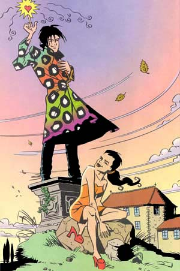
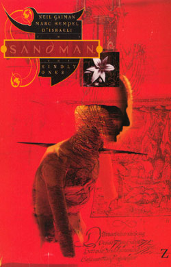
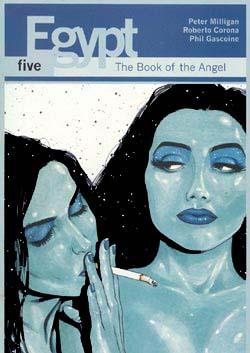

Comics
Updated 07/09/2001
These excerpts are reproduced without permission. Please buy the originals.
|  |
A comic is like a storyboard for a very expensive film. With films there is a budget, and
constant attention has to given to how the picture is to be achieved.
With comics all that's needed is an artist good enough to realise the
pictures in the writers head.
There are two types of comics - limited runs of short stories (unusually from 1 to 8 issues), and ongoing series that continue until the sales fall too low. While the first type is more focused, the second has the freedom to explore a great deal further than the original conception. Shade, the Changing Man was a moderately successful ongoing series. There were 72 issues of Shade, the Changing Man - from 1990 to 1996. Judging by the vast interconnected world of comics, the character probably existed as part of the DC Universe in some previous incarnation. I have no idea. What I do know, is that after a slightly dodgy start, the series built into a whole much greater than the sum of it's parts. It was written by Peter Milligan. The picture on the left is drawn by Rian Hughes. At the end of this page I've reproduced the last page of Issue 49. |
|  |
The Sandman started in 1987, and ran for 75 issues until 1996.
Hugely popular, it is unique amongst comics in that it ended for artistic, rather than financial
reasons. It is also unique in that while 75 issues long, it follows a linear plot with very little
padding.
The central character is Morpheus, which certainly gives imagination the chance to run riot. With dreams, you can ignore any normal conventions - though the strength of the story is that it builds up an entirely unnatural and unbeliveable, but consistent, world. Or maybe I just like it because it sets A Midsummer-Night's Dream in Wilmington. Whatever, it remains very popular, and there are probably hundreds of web sites devoted to it. Below are two frames from issue 64: |
|  |
Egypt, apart from being a word I find impossible to spell,
was a mini-series of 7 issues, by Peter Milligan (again).
It is a story of outrageous co-incidences (like all the best stories), set in a far future that wants to be the past. Below is one frame from issue 5: |
Back to duncan's page.